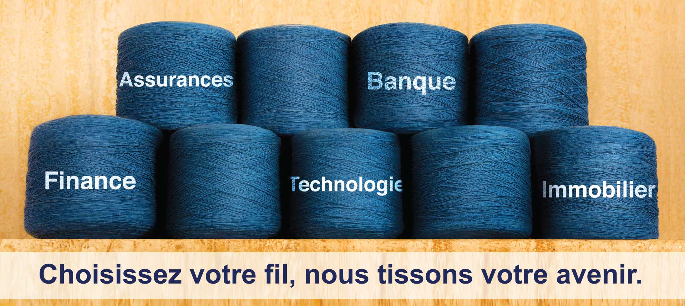

Le Groupe se positionne comme le premier groupe financier de référence, leader en bancassurance, performant et attractif, qui permet au plus grand nombre d'accéder à des solutions de qualités, adaptés et innovantes
NOTRE MISSION
Le groupe entend offrir par le professionnalisme et l'engagement de ses équipes en assurances et en banque, en vue de fournir au client, PROTECTION ET FINANCEMENT et participer ainsi au développemebt économique et social des pays....
NOS METIERS
Le groupe FRANCS-GAINS dispose d'un important réseau Assurances en Afrique et en Amérique. Nous affirmons notre ambition de devenir le leader de la bancassurance dans la zone CIMA par le développement de la banque de détail et par la mise en place d'un suivi de l'impact ennvironnemental et social des projets financés et/ou assurés. Aujourd'hui, le groupe FRANGINS a pour coeur de métier l'assurance et la banque, mais exerce également dans les secteurs de la finance, l'immobilier et des technologies.
Assurances
Banque et Finance
Technologies
Immobilier

MOT DU PRESIDENT
Après plus de 20 années d’activités, le Groupe FRANCS-GAINS demeure un acteur de référence sur le marché. Nous sommes heureux et fiers d’avoir pu partager avec vous cette succes story, aujourd’hui reconnue par tous.
Je voudrais vous remercier, individuellement et collectivement, chers clients, partenaires et actionnaires pour tout ce que vous avez apporté au Groupe FRANGINS.
Malgré l‘environnement sans cesse changeant et plus exigeant, le Groupe réaffirme son engagement à tout mettre en œuvre pour continuer d’être un Groupe africain prospère et de référence dans les meilleures pratiques de la gouvernance d’entreprise.
L’acquisition du réseau francophone de Diamond Bank SA, par FRANGINS Banque Côte d’Ivoire et FRANGINS Vie Assurances Côte d’Ivoire aux côtés de MANZI Finances SA, ouvre de nouvelles perspectives de développement de l’activité bancaire du Groupe. Ce pôle est désormais présent grâce à ce réseau dans cinq (5) pays d’Afrique de l’Ouest : Côte d’Ivoire, Guinée, Bénin, Sénégal et Togo.
Par ailleurs, de gros efforts financiers ont été consentis par les actionnaires pour renforcer les fonds propres des sociétés d’assurances afin de les mettre toutes en conformité avec les exigences règlementaires de capital minimum en 2019 et avec les autres ratios prudentiels.
POUR LES ANNÉES À VENIR, LE GROUPE S’ENGAGE À APPORTER PLUS DE FINANCEMENT ET DE PROTECTION AUX FAMILLES AFRICAINES, PAR DES SOLUTIONS ASSURANCIELLES ET BANCAIRES ADAPTÉES ET INNOVANTES. C’EST NOTRE MISSION.
Frangin LEROI
FRANCS-GAINS, LE VRAI VISAGE DE L’ASSURANCE ET DE LA BANQUE.
------ CITATION ------
Travailler dans le GROUPE FRANCS-GAINS est un plaisir qui à rien ne ressemble.. Le développement du groupe continuera de se faire dans le confiance et avec tous les partenaires de qualités
.jpg)